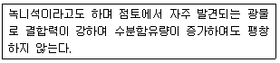
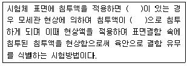
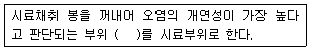
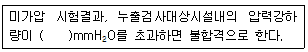
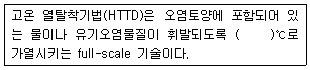
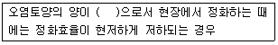
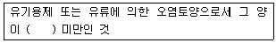
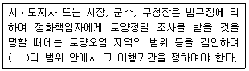

토양환경기사 (2018-04-28 기출문제)
1과목: 토양학개론
1. 지하수 흐름속도는 Darcy의 법칙으로 계산할 수 있다. 다음 중 흐름속도의 계산인자가 아닌 것은?
- 수리전도도
- 유효공극율
- 수두구배
- 지층두께
(정답률: 61%)

2. 토양반응(soil reaction)에 대한 설명 중 옳지 않은 것은?
- 토양반응의 정도를 나타내는 데에는 pH값이 많이 사용된다.
- 토양산성에 가장 큰 영향을 끼치는 이온은 탄산염, 중탄산염 및 인산염이다.
- 활산도는 pH값으로 나타내며 토양용액에서 H+의 활동도를 측정한 값이다.
- 잠산도는 토양입자에 흡착되어 있는 교환성 수소와 교환성 알루미늄에 의한 것이다.
(정답률: 64%)
3. 다음 설명에 해당하는 광물은?

- 버미귤라이트
- 클로라이트
- 몬모릴로나이트
- 카올리나이트
(정답률: 66%)
4. Cd(OH)2의 용해도곱 상수(Ksp)가 25℃에서 5.3×10-15일 때 물에 대한 Cd(OH)2의 용해도(mg/L)는? (단, Cd(OH)2의 분자량＝146.4)
- 1.11
- 1.61
- 1.89
- 2.10
(정답률: 34%)
5. 미국토양분류 기준인 Soil Taxonomy의 토양목 구분 중 Entisol에 관한 설명으로 옳은 것은?
- 토양층위가 뚜렷하지 않은 미발달 토양
- 유기물함량이 높아 표토가 검은 빛깔인 토양
- 화산재 토양
- 유기질로 이루어진 늪지의 토양
(정답률: 80%)
6. 토양오염의 특징으로 적합하지 않은 것은?
- 오염경로의 다양성
- 오염영향의 국지성
- 피해발현의 긴급성
- 오염의 비인지성
(정답률: 83%)
7. 다음 중 마하수(mach number)를 옳게 나타낸 것은?(오류 신고가 접수된 문제입니다. 반드시 정답과 해설을 확인하시기 바랍니다.)
- 유속을 음속으로 나눈 값
- 유속을 광속으로 나눈 값
- 유속을 기체분자의 절대속도 값으로 나눈 값
- 유속을 전자속도로 나눈 값
(정답률: 39%)
8. 토양유실을 위해 토양을 피복하고자 할 때 토양유실 방지를 위한 피복식물로서 가장 효과적인 것은?
- 무우
- 옥수수
- 감자
- 목초
(정답률: 70%)
9. 규산 점토 광물에 속하지 않는 것은?
- 일라이트(illite)
- 몬모릴로나이트(montmorillonite)
- 카올리나이트(kaolinte)
- 철산화물
(정답률: 84%)
10. 토양 중에 벤젠의 양을 측정하기 위해 토양 5g을 메탄올 50mL로 용매추출하여 GC-FID로 측정해 보니 메탄올 중에 5mg/L로 검출되었다. 토양 중에 존재하는 벤젠의 양(mg/kgㆍsoil)은? (단, 토양 중 벤젠이 모두 회수되었다고 가정)
- 0.5
- 5
- 50
- 500
(정답률: 67%)
11. 총석유계탄화수소(TPH) 50mg/kg으로 오염된 토양 100톤과 85mg/kg으로 오염된 토양 40톤을 혼합하였다. 완전히 혼합된 후의 토양 TPH 농도(mg/kg)는? (단, 혼합과정 중 휘발 등 저감조건은 고려하지 않음)
- 60.0
- 62.5
- 65.0
- 67.5
(정답률: 66%)
12. 점토광물 중 Illite에 대한 내용으로 틀린 것은?
- Vermiculite와 같이 2：1의 층상구조를 가진다.
- 습윤상태에서 팽창이 불가능하다.
- 토양 중에 흔히 존재하는 점토광물로서 K+ 함량이 많은 퇴적물이 저온 조건하에서 변성 작용을 받을 때 형성되는 것으로 알려져 있다.
- 운모에 비하여 K+ 함량이 높아 Hydrous mica로 불린다.
(정답률: 56%)
13. 오염물질과 토양과의 상호반응인 흡착에 관한 설명으로 가장 거리가 먼 것은?
- 용질이 액상과 토양입자 경계면 사이에서 분배될 때 일어난다.
- 오염물질과 토양 상호반응은 용액 중 오염물질이 정전기적 인력에 의해 토양입자의 표면과 결합할 때 화학반응이 일어난다.
- 화학반응은 토양 입자 표면의 성질, 오염물질 침출액의 화학ㆍ물리적 성질에 따라 다양하다.
- 음이온 흡착은 원자가, 결정성, 수화반경 등이 결정적 인자로 작용한다.
(정답률: 50%)
14. 토양에서 일어나는 흡착 모델인 랭그뮤어(Langmuir) 흡착등온모델의 전제가 되는 가정에 관한 설명으로 옳지 않은 것은?
- 흡착은 흡착지점이 고정된 단일 흡착층에서 일어난다.
- 흡착은 가역적이다.
- 표면에 흡착된 분자는 옆으로 이동한다.
- 흡착에너지는 모든 지점에서 동일하다.
(정답률: 72%)
15. 지하수에 용해되어 통로를 형성하는 암석으로, 지하수량이 풍부하나 흡착 등 정화기능이 부족하여 지하수 오염 가능성이 큰 암석층은?
- 미고결사암층
- 석회암층
- 화강암층
- 변성암층
(정답률: 65%)
16. 주로 점토의 구성 성분인 2차 광물이 아닌 것은?
- 석영
- 카올리나이트
- 몬모릴로나이트
- 일라이트
(정답률: 81%)
17. 단위 동수경사에서 대수층의 단위폭 당 유량, 투수계수와 대수층의 두께를 곱한 값으로 나타내는 대수층 지하수 채수량에 영향을 미치는 인자는?
- 전수계수
- 투수량계수
- 저류계수
- 비수계수
(정답률: 62%)
18. 토양의 입단(작은 토양입자들이 서로 응집하여 뭉쳐진 덩어리 형태의 토양)형성 요인에 관한 내용으로 틀린 것은?
- 유기물의 작용：유기물은 곰팡이, 세균, 미소동물 등의 에너지원이 되며, 미생물들이 분비하는 점액성의 유기물질들은 토양입단 형성에 유익한 역할을 한다.
- 미생물의 작용：입단은 미생물이 유기물을 분해하면서 만들어 내는 균사에 의해서도 만들어진다.
- 양이온의 작용：Na+의 농도가 높은 토양에서는 응집 촉진 효과에 의해 입단이 잘 발달 된다.
- 토양개량제의 작용：토양개량제의 입단화 효과는 정전기적 또는 교환 반응, 수소결합, 반데르발스힘 등에 의해 나타난다.
(정답률: 66%)
19. 토양의 염류 집적의 주요 원인으로 옳은 것은?
- 지하수위의 상승
- 관개수에 의해 염류의 감소
- 강수량 증가
- 양호한 배수조건
(정답률: 72%)
20. 토양시료에 대해 공극률 측정결과가 20%였다. 시료 내 수분부피와 공기부피가 각각 16cm3, 4cm3였다면 현장에 채취한 토양시료의 전체부피(cm3)는? (단, 공극은 수분과 공기로만 차 있다고 가정)
- 60
- 80
- 100
- 120
(정답률: 72%)
2과목: 토양 및 지하수 오염조사기술
21. 토양오염 정밀조사결과보고서에 수록되는 시료채취 지점도 및 오염분포도에 표기되어 있는 축척은?
- 축척 1/500(조사범위가 20000m2 이상인 경우에는 1/5000) 지도에 시료채취 지점 표기
- 축척 1/2500(조사범위가 20000m2 이상인 경우에는 1/5000) 지도에 시료채취 지점 표기
- 축척 1/500(조사범위가 40000m2 이상인 경우에는 1/5000) 지도에 시료채취 지점 표기
- 축척 1/500(조사범위가 40000m2 이상인 경우에는 1/2500) 지도에 시료채취 지점 표기
(정답률: 59%)
22. 지하매설저장시설 내 배관으로부터 2m 지점에서 토양시료를 채취하였다면, 토양시료채취지점에서 최대한의 시료채취 깊이(m)로 적절한 것은?
- 1
- 2
- 3
- 4
(정답률: 78%)
23. 기체크로마토그래프법으로 PCB를 정량하는 방법에 대한 설명으로 옳지 않은 것은?
- 검출기는 열전도도검출기(TCD)를 사용한다.
- 검출기의 온도는 270~320℃로 운영한다.
- 농축장치는 구데르나다니쉬 농축기 또는 회전증발농축기를 사용한다.
- PCB의 추출은 노말헥산 용액을 사용한다.
(정답률: 62%)
24. 오염개연성이 확인된 산업단지에 대한 토양환경평가 개황조사 계획을 수립하고자 한다. 조사면적에 대한 시료채취 지점수량 선정이 잘못된 것은?
- 면적(m2)：400, 최소 지점수(개)：4
- 면적(m2)：600, 최소 지점수(개)：6
- 면적(m2)：1400, 최소 지점수(개)：7
- 면적(m2)：2800, 최소 지점수(개)：8
(정답률: 58%)
25. 원자흡수분광광도계에 불꽃을 만들기 위해 가연성가스로 아세틸렌을 사용한다. 조연성 가스로 적합한 것은?
- 수소
- 공기
- 프로판
- 아르곤
(정답률: 74%)
26. 원자흡수분광광도법에 의한 금속별 측정파장 및 불꽃기체로 적절한 것은?
- 니켈 324.7(nm), 공기-아세틸렌
- 납 283.3(nm), 공기-아세틸렌
- 아연 213.9(nm), 헬륨-아세틸렌
- 카드뮴 228.8(nm), 헬륨-아세틸렌
(정답률: 70%)
27. 누출검사대상시설에 대한 설명으로 틀린 것은?
- '부속배관'이라 함은 누출검사대상시설에 용접 또는 나사조임방식으로 직접 연결되는 배관을 말한다.
- '지하매설배관'이라 함은 부속배관의 경로 중 지하에 매설되어 누출여부를 육안으로 직접 확인할 수 없는 배관을 말한다.
- '배관접속부'라 함은 누출검사대상시설과 부속배관, 부속배관과 배관을 연결하기 위하여 용접접합 또는 나사조임방식 등으로 접속한 부분을 말한다.
- '누출검지관'이라 함은 액체의 누출여부를 누출검사대상시설 내부에서 직접 또는 간접적으로 확인하기 위해 설치된 관을 말한다.
(정답률: 71%)
28. 기체크로마토그래피로 페놀류를 측정하기 위한 추출액으로 알맞은 것은?
- 디클로로메탄
- 아세톤/노말헥산
- 에탄올
- 노말펜탄
(정답률: 73%)
29. 저장물질이 없는 누출검사대상시설-가압시험법에 적용되는 검사기기 및 기구 중 안전 밸브에 관한 기준으로 옳은 것은?
- 0.5kgf/cm2 이하에서 작동되어야 한다.
- 0.7kgf/cm2 이하에서 작동되어야 한다.
- 0.9kgf/cm2 이하에서 작동되어야 한다.
- 1.2kgf/cm2 이하에서 작동되어야 한다.
(정답률: 79%)
30. 원자흡수분광광도법 적용 시 사용되는 다음의 용어 설명 중 옳지 않은 것은?
- 공명선(Resonance line)：원자가 외부로부터 빛을 흡수했다가 다시 먼저 상태로 돌아갈 때 방사하는 스펙트럼선
- 다원료 불꽃(Fuel-rich Flame)：조연성 가스/가연성 가스의 비를 크게 한 불꽃
- 중공음극 램프(Hollow Cathode Lamp)：원자흡수분광광도법의 광원이 되는 것으로 목적 원소를 함유하는 중공음극 한 개 또는 그 이상을 저압의 네온과 함께 채운 방전관
- 분무기(Nebulizer or Atomizer)：시료를 미세한 입자로 만들어 주기 위하여 분무하는 장치
(정답률: 50%)
31. 저장물질이 없는 누출검사대상시설의 누출 검사 방법인 비파괴시험법 중 침투탐상시험에 대한 내용으로 ( )에 맞는 것은?

- 열린 결함
- 표준 결함
- 결합 결함
- 누설 결함
(정답률: 61%)
32. 토양오염관리대상시설지역에서 시료의 채취 및 보관에 관한 설명으로 ( ) 안에 옳은 내용은? (단, 봉이 들어있는 타격식, 나선식 토양시추 장비 기준)

- ±5cm
- ±10cm
- ±15cm
- ±30cm
(정답률: 71%)
33. 흡광광도 측정에서 투과율이 10%일 때의 흡광도는?
- 0.7
- 0.8
- 0.9
- 1.0
(정답률: 68%)
34. 저장물질이 있는 누출검사대상시설-기상부의 시험법 중 미가압법 시험의 판정기준은?

- 2
- 4
- 6
- 8
(정답률: 76%)
35. 토양 중 불소측정방법에 대한 설명으로 틀린 것은?
- 불소가 진홍색의 zirconium-발색시약과의 반응으로 음이온복합체(ZrF62-)를 형성하는 과정을 이용한 방법이다.
- 불소의 양이 많아질수록 색깔이 짙어지게 된다.
- 불소이온과 zirconium이온 사이의 반응속도는 반응혼합물의 산도에 따라 달라진다.
- 토양시료는 막자사발에서 갈아 0.075mm(20 메쉬)의 표준체로 체걸음한 것을 분석에 사용한다.
(정답률: 70%)
36. 구리 표준원액(1000mg/L)이란 0.1g의 구리 금속(99.9% 이상)에 질산 40mL을 넣어 녹이고 가열하여 질소화합물을 추출한 후, 정제수를 넣어 만든 용액을 뜻한다. 이때 구리 표준원액의 부피(mL)는?
- 500
- 800
- 1000
- 1500
(정답률: 36%)
37. 6가 크롬 분석을 위해 사용되는 이온크로마토그래피-자외선/가시선 분광계의 구성순서는?
- 액송펌프 → 용리액 저장조 → 시료주입부 → 분리컬럼 → PCR → UV/VIS 검출기 → 기록계
- 용리액 저장조 → 액송펌프 → 시료주입부 → 분리컬럼 → PCR → UV/VIS 검출기 → 기록계
- 용리액 저장조 → 시료주입부 → 액송펌프 → 분리컬럼 → PCR → UV/VIS 검출기 → 기록계
- 용리액 저장조 → 시료주입부 → 분리컬럼 → 액송펌프 → PCR → UV/VIS 검출기 → 기록계
(정답률: 63%)
38. 다음 중 1ppb와 같은 농도는?
- 1μg/m3
- 1mg/kg
- 0.001%
- 0.001ppm
(정답률: 77%)
39. 다음 용어에 대한 정의로 옳지 않은 것은?
- 진공이라 함은 따로 규정이 없는 한 15mmH2O 이하를 말한다.
- 약이라 함은 기재된 양에 대하여 ±10% 이상의 차가 있어서는 안된다.
- 정확히 취하여라 하는 것은 규정한 양의 검체 또는 시액을 홀피펫으로 눈금까지 취하는 것을 말한다.
- 밀폐용기라 함은 취급 또는 저장하는 동안에 이물질이 들어가거나 또는 내용물이 손실되지 아니하도록 보호하는 용기를 말한다.
(정답률: 74%)
40. 분석대상 물질별 체걸음 방법에 대한 설명으로 맞는 것은?
- 비소, 카드뮴등의 중금속 가용성 함량 분석대상 물질은 눈금간격 2mm의 표준체(10 메쉬)로 체걸음한다.
- 니켈, 아연 등 중금속 전함량 분석 대상 물질은 눈금간격 0.25mm(50 메쉬)로 체걸음 한다.
- 불소는 눈금간격 0.025mm의 표준체(100 메쉬)로 체걸음한다.
- 납, 구리, 6가 크롬 등의 중금속 가용성 함량 분석대상 물질은 눈금간격 4mm의 표준체(20 메쉬)로 체걸음한다.
(정답률: 57%)
3과목: 토양 및 지하수 오염정화 기술
41. 토양경작의 효과를 증진시키기 위해 일반적으로 사용되는 탄소：질소：인의 비율은?
- 25：10：1
- 50：10：1
- 100：10：1
- 200：10：1
(정답률: 66%)
42. 투과성(투수성) 반응벽의 처리매체에 대한 내용으로 옳지 않은 것은?
- 석회는 산성 지하수를 중성화할 필요성이 있는 경우에 사용될 수 있다.
- 석회는 카드뮴, 철, 크롬 금속을 제거하는 데에는 효과적이지 못하다.
- 제오라이트와 합성이온교환수지는 수명이 짧고 고가이며 재활성화 하는 데 문제가 있어 경제적인 면에서 적용성이 적다.
- 활성탄은 유기물질로 오염된 지하수를 제어하는 데 사용될 수 있다.
(정답률: 58%)
43. 열탈착기법에 관한 설명으로 ( ) 안에 들어갈 알맞은 온도 범위는?

- 80~120
- 120~200
- 320~560
- 850~1000
(정답률: 63%)
44. 토양복원기술 중 토양세척(soil washing) 기법에 대한 설명으로 가장 거리가 먼 것은?
- 외부환경의 조건변화에 대한 영향이 적고 자체적인 조건조절이 가능한 폐쇄형 공정이다.
- 적용 가능한 오염물 종류의 범위가 넓다.
- 오염 토양 내 수분공급으로 미생물에 의한 처리 효율을 높일 수 있다.
- 오염토양 부피의 단시간 내의 효율적인 급감으로 2차 처리비용이 절감된다.
(정답률: 58%)
45. 생분해가 어려운 물질의 일반적인 조건(특성)과 가장 거리가 먼 것은?
- 원자의 전하차가 적은 화합물
- 물에 대한 용해도가 낮은 화합물
- 가지구조가 많은 화합물
- 분자 내에 많은 수의 할로겐원소를 함유하는 화합물
(정답률: 79%)
46. 토양증기추출법 설계 시 우선적으로 고려하지 않아도 되는 인자는?
- 헨리상수
- 유기탄소분배계수
- 용해도
- 반응상수
(정답률: 38%)
47. 생물학적 복원기법에서 복원효율을 증진시키기 위하여 산소를 주입하는 경우의 주입방법으로 틀린 것은?
- 대기 중의 공기 주입방법
- 압축산소 주입방법
- 과산화수소(H2O2) 주입방법
- 오존(O3) 주입방법
(정답률: 76%)
48. 토양오염정화기법 중 열적처리기술인 소각법에 대한 설명으로 틀린 것은?
- 토양 내 미생물, 유기물질이 소멸되지 않는 친환경적인 공법이다.
- PCB, 다이옥신 등 난분해성물질의 분해에도 적용성이 우수하다.
- 중금속을 함유한 오염토양의 경우에는 배기가스처리시설이나 소각재 처리에 주의하여야 한다.
- 처리효율이 높지만 에너지 소요량이 많아 타공법에 비해 처리단가가 높다.
(정답률: 66%)
49. 양수 및 처리 기법(pump and treat)에서 피압대수층의 투수량계수(T)가 1000m2/day, 양수량이 100m3/day, 우물함수 W(u)가 12.56이라면 우물손실(well loss)을 고려하지 않았을 때 양수정에서의 수위강하(m)는?
- 0.1
- 0.2
- 0.3
- 0.4
(정답률: 41%)
50. 토양정화기술에서 토양의 소성과 관계되는 설명으로 틀린 것은?
- 실트와 점토로 구성된 토양의 소성지수는 일반적으로 작게 나타날 수 있다.
- 소성은 토양 내 함수량과 관련이 있다.
- 소성을 가진 토양은 처리할 때보다 더 높은 온도를 필요로 한다.
- 토양 내 소성을 낮추기 위하여 토양의 파쇄 또는 토양개량제와 혼합하는 처리가 필요하다.
(정답률: 63%)
51. 오염토양정화 기술 중 저온열탈착공법의 특징에 대한 설명으로 틀린 것은?
- 오염토양 내 TPH 농도가 높을수록 열양이 높아 적용성이 좋다.
- 토양 내 함수율이 높으면 에너지소모량이 많아져 전처리가 요구된다.
- 오염토가 지하 8m 이하에 위치하는 경우에는 토공비용의 상승으로 경제성이 낮아진다.
- 토양 내 자갈 등 조대물질이 존재하는 경우에는 선별 등 전처리가 필요하다.
(정답률: 60%)
52. 저온열탈착 공법으로 적용하기에 부적합한 물질은?
- 중유
- 윤활유
- PCBs
- 크롬
(정답률: 59%)
53. 자연저감법에 대한 설명으로 옳지 않은 것은?
- 자연저감법은 난분해성 오염물질 정화에 주로 사용된다.
- 포화대 및 불포화대에 적용이 가능하다.
- 부지 특성에 따라 모니터링 비용 등이 과다하게 소요되어 경제성이 떨어진다.
- 부지의 사용제한이나 처리기간이 장기간 소요된다.
(정답률: 43%)
54. 지중 유리화기법(Vitrification, in-situ)에 관한 설명으로 옳지 않은 것은?
- 오염토양을 전기적으로 용융시킴으로써 용출 특성이 매우 적은 결정구조로 만드는 기법이다.
- 중금속 등 무기물질 용융제거에 주로 활용되며 휘발성유기물질이 분포된 지역은 적용하지 않는다.
- 정화된 토양에 유리화된 물질이 포함되어 있기 때문에 분리하지 않으면 다시 토양을 사용하는 데 많은 제약이 따른다.
- 대수면 아래에 분포하고 있는 오염물질을 처리하는 경우에는 재오염 방지기술이 필요하다.
(정답률: 53%)
55. 토양경작법의 장점이 아닌 것은?
- 유류성분의 경우 저농도보다는 고농도 오염에 효과적이다.
- 일반적으로 설계가 용이하다.
- 일반적으로 비용이 저렴하다.
- 일반적으로 지중처리보다 처리효율이 높다.
(정답률: 61%)
56. 식물을 이용하여 오염된 토양과 지하수를 정화하는 식물정화법의 기작이 아닌 것은?
- 식물에 의한 추출(phytoextraction)
- 식물에 의한 분해(phytodegradation)
- 식물에 의한 안정화(phytostabilization)
- 식물에 의한 고형화(phytosolidification)
(정답률: 78%)
57. 토양에 유류가 1000g 존재한다. 계면활성제 세척공정을 이용하여 유류를 용해시키고자 할 경우, 필요한 계면활성제의 양(kg)은? (단, 계면활성제 내 유류 용해도＝2000mg/L, 계면활성제의 밀도＝1.06kg/L)
- 510
- 530
- 550
- 570
(정답률: 64%)
58. 식물정화법의 처리 원리 중 식물에 의한 안정화 방식으로 활용 가능한 대표적인 식물종은?
- 포플러나무
- 인도겨자
- 보리
- 해바라기
(정답률: 72%)
59. 유류 오염 토양처리를 위한 열탈착의 적정 온도가 가장 낮게 조정될 수 있는 것은?
- 연료유 No.6
- 경유
- 윤활유
- 등유
(정답률: 55%)
60. 생물학적 통기법(bioventing)에서 주입되는 공기유량은 100m3/day이며 초기 주입 산소 함유비가 21%이었다. 토양공기 내 및 배기가스 내 산소함유비가 16% 정도일 경우 이 오염 부지의 평균 산소이용률(%/day)은? (단, 토양체적＝50m3, 토양공극률＝0.5)
- 15
- 20
- 25
- 30
(정답률: 65%)
4과목: 토양 및 지하수 환경관계법규
61. 오염원인자가 오염토양개선사업 계획의 승인을 얻고자 할 때에는 개선사업계획(변경) 승인 신청서를 사업개시일 며칠 전까지 특별자치도지사ㆍ시장ㆍ군수ㆍ구청장에게 제출하여야 하는가?
- 7일
- 15일
- 20일
- 30일
(정답률: 50%)
62. 토양관련전문기관 및 토양정화업에 종사하는 기술인력은 환경부령으로 정하는 바에 따라 교육을 받아야 한다. 이를 위반하여 교육을 받지 않은 경우 또는 교육을 받게 하지 않은 경우가 3회 이상 위반 시 과태료 기준은?
- 100만원
- 200만원
- 300만원
- 500만원
(정답률: 59%)
63. 오염토양(토양오염도가 규정에 의한 토양오염 우려기준을 넘는 토양) 중에 반출정화 대상 토양에 대한 내용으로 ( ) 안에 알맞은 것은?

- 5세제곱미터 미만
- 5세제곱미터 이상
- 50세제곱미터 미만
- 50세제곱미터 이상
(정답률: 57%)
64. 지하수를 개발ㆍ이용하려는 자는 대통령령으로 정하는 바에 따라 미리 시장ㆍ군수ㆍ구청장의 허가를 받아야 하지만, 허가를 받지 않아도 되는 경우도 있다. 다음 중 허가를 받아야 되는 경우는?
- 자연히 흘러나오는 지하수를 이용하는 경우
- 다른 법률에 따른 허가ㆍ인가 등을 받거나 신고를 하고 시행하는 사업 등으로 인하여 부수적으로 발생하는 지하수를 이용하는 경우
- 하천구역의 경계로부터 대통령령으로 정하는 범위 내의 지역에서 지하수를 개발ㆍ이용하는 경우
- 동력장치를 사용하지 아니하고 공동우물을 개발ㆍ이용하는 경우
(정답률: 64%)
65. 위해성평가기관이 어떤 부자의 토양오염 물질이 인체와 환경에 미치는 위해의 정도를 평가하기 위하여 평가 시 고려해야 할 사항이 아닌 것은?
- 오염물질의 종류
- 오염물질의 오염도
- 주변 환경
- 토지이용 현황
(정답률: 45%)
66. 토양환경보전법에 의한 토양오염물질이 아닌 것은?
- 구리 및 그 화합물
- 아연 및 그 화합물
- 니켈 및 그 화합물
- 동ㆍ식물성 유류
(정답률: 66%)
67. 토양관련전문기관은 토양오염검사신청서를 받은 날로부터 며칠 이내에 시료채취 또는 누출검사를 하여야 하는가?
- 1일
- 7일
- 14일
- 21일
(정답률: 72%)
68. 오염토양 정화방법 중 열적처리방법으로 짝지어진 것은?
- 열탈착법, 유리화법
- 동전기법, 소각법
- 열분해법, 안정화법
- 소각법, 고형화법
(정답률: 67%)
69. 토양정화업을 수행 중 도급받은 토양정화공사를 일괄하여 하도급한 때 행정처분기준으로 적합한 것은?
- 1차：경고
- 2차：영업정지 1개월
- 3차：영업정지 3개월
- 4차：등록취소
(정답률: 58%)
70. 오염토양개선사업의 종류와 가장 거리가 먼 것은?
- 오염수변 지역 정화사업
- 오염토양의 위생적 매립ㆍ정화사업
- 객토 및 토양개량제의 사용 등 농토배양사업
- 오염물질의 흡수력이 강한 식물식재사업
(정답률: 63%)
71. 토양오염물질이 인체에 미치는 위해도를 결정하고자 하는 경우에 고려할 사항에 대한 설명으로 틀린 것은?
- 평가대상물질을 발암물질과 비발암물질로 구분하여 위해도를 각각 계산한다.
- 발암물질의 위해도는 발암계수와 인체노출평가를 통해 산정된 일일평균 인체노출량의 곱으로 결정된다.
- 비발암물질 위해도는 비발암참고치와 인체노출평가를 통해 산정된 일일평균 인체노출량의 곱으로 결정된다.
- 결정된 허용가능한 초과발암위해도보다 계산된 초과발암위해도가 크면 발암위해성이 있는 것으로 판단한다.
(정답률: 57%)
72. 구청장이 정화조치를 명할 수 없는 경우는?
- 석유화학공장에 대한 토양오염실태조사 결과 우려기준을 초과한 경우
- 허가된 TCE 저장시설에 대한 토양정밀조사 결과 우려기준을 초과한 경우
- 송유관시설의 송유용 배관 주변에 대한 토양오염검사결과 우려기준을 초과한 경우
- 4만리터 용량의 경우탱크를 보유한 주유소의 토양오염정기 검사 시 우려기준을 초과한 경우
(정답률: 47%)
73. 지하수법에서 지하수 관련 용어의 뜻으로 틀린 것은?
- 지하수란 지하의 지층이나 암석 사이의 빈틈을 채우고 있거나 흐르는 물을 말한다.
- 지하수영향조사란 지하수의 개발ㆍ이용이 주변지역에 미치는 영향을 분석ㆍ예측하는 조사를 말한다.
- 지하수개발ㆍ이용시공업이란 지하수개발 이용을 위한 시설을 시공, 해체, 관리하는 사업을 말한다.
- 원상복구란 원상복구 대상인 시설 또는 토지에 대하여 오염물질의 유입을 막고 사람의 보건 및 안전에 위험을 주지 아니하도록 해당 시설을 해체하거나 해당 토지를 적절하게 되메우는 것을 말한다.
(정답률: 45%)
74. 지하수오염평가에서 고려하여야 하는 항목ㆍ절차에 해당하지 않은 것은?
- 개략적인 오염범위 추정을 위한 자료수집 및 현장조사
- 오염도 작성 및 오염물질 총량 추정
- 오염지하수에 의한 주변지역에 미치는 영향
- 오염된 지하수의 자연정화 가능성 평가
(정답률: 36%)
75. 토양정화업의 등록을 한 자에게 위탁하지 아니하고 오염원인자가 직접 정화할 수 있는 경우에 관한 내용으로 ( ) 안에 알맞은 것은?

- 5세제곱미터
- 10세제곱미터
- 30세제곱미터
- 50세제곱미터
(정답률: 63%)
76. 토양관련전문기관의 결격사유에서 다음 중 토양관련전문기관으로 지정될 수 있는 자는?
- 피성년후견인
- 피한정후견인
- 지정이 취소된 후 2년이 지나지 아니한 자
- 파산선고를 받고 복권된지 2년이 지나지 아니한 자
(정답률: 67%)
77. 토양오염물질 중 유기용제류에 해당되는 물질은?
- TCE, PCB
- TCE, PCE
- TCE, 유기인 화합물
- PCB, PCE
(정답률: 66%)
78. 토양정밀 조사명령에 관한 내용으로 ( ) 안에 알맞은 것은?

- 1월
- 2월
- 3월
- 6월
(정답률: 73%)
79. 토양관련전문기관 지정을 위한 기술인력기준에 대한 설명이 틀린 것은? (문제 오류로 실제 시험에서는 3, 4번이 정답처리 되었습니다. 여기서는 3번을 누르면 정답 처리 됩니다.)
- 해당 분야 박사 또는 기술사 1명 이상
- 해당 분야 기사 1명 이상
- 해당 분야 산업기사 3명 이상
- 고등교육법 제2조에 따른 학교의 해당 분야 졸업자 또는 이와 동등 이상의 자격이 있는 사람 4명 이상
(정답률: 78%)
80. 토양오염이 발생한 토지를 소유하고 있었거나 현재 소유 또는 점유하고 있는 자임에도 불구하고 정화책임자로 보는 경우는?
- 토양오염이 발생한 토지를 양수할 당시 토양오염 사실에 대하여 선의이며 과실이 없는 경우
- 해당 토지를 소유 또는 점유하고 있는 중에 토양오염이 발생한 경우로서 자신이 해당 토양오염 발생하여 대하여 귀책 사유가 없는 경우
- 1996년 1월 6일 이후에 토양오염의 원인이 된 토양오염관리대상시설의 운영자에게 자신이 소유 또는 점유 중인 토지의 사용을 허용한 경우
- 1996년 1월 5일 이전에 양도 또는 그 밖의 사유로 해당 토지를 소유하지 아니하게 된 경우
(정답률: 53%)